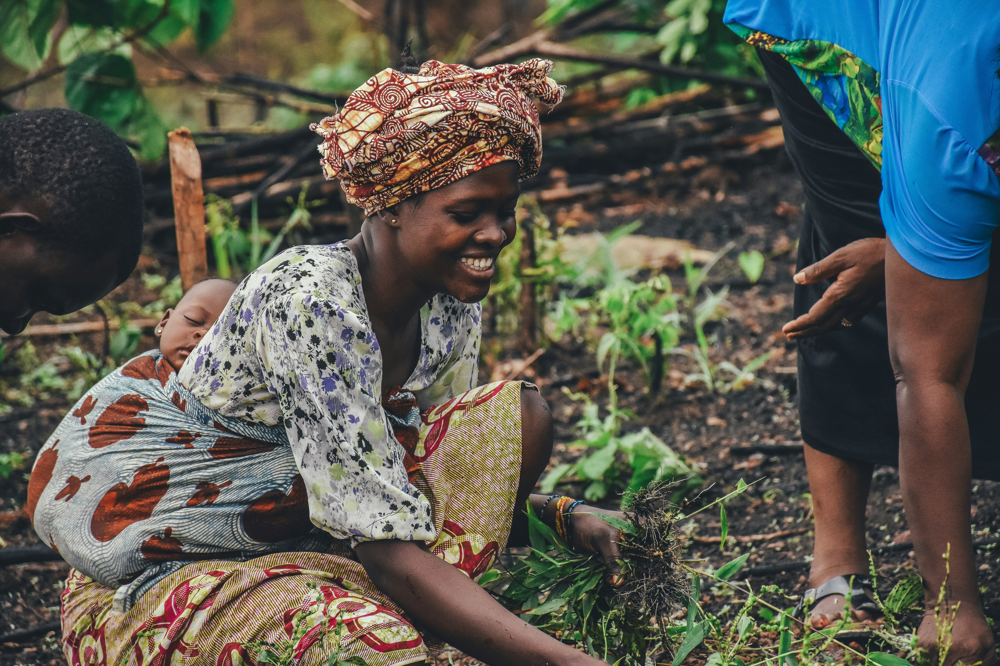
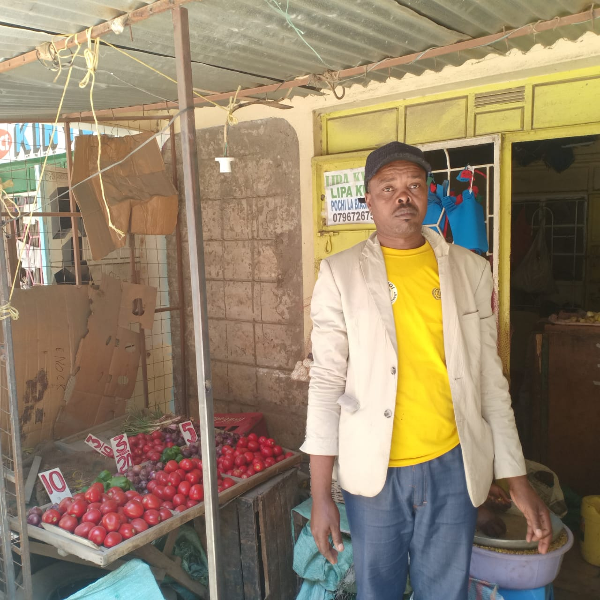
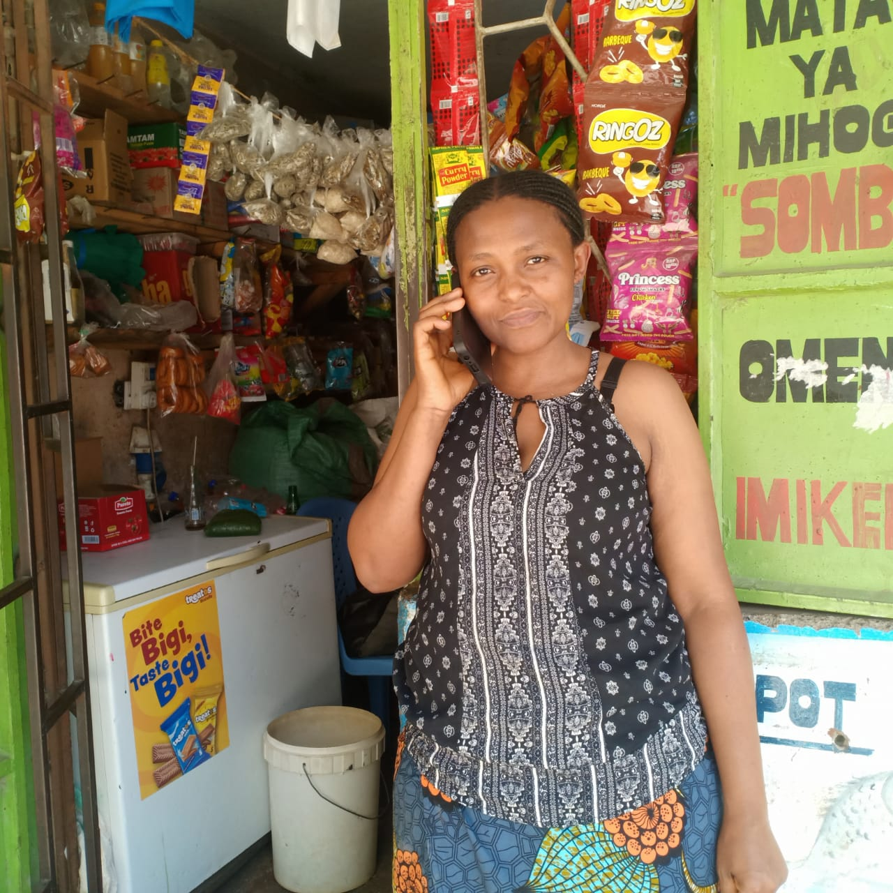
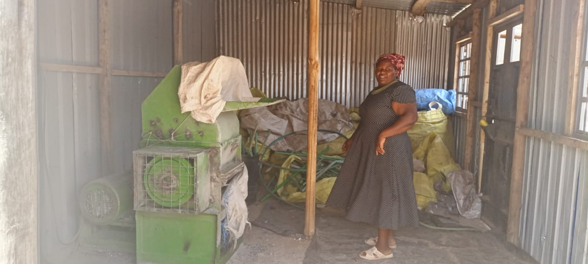
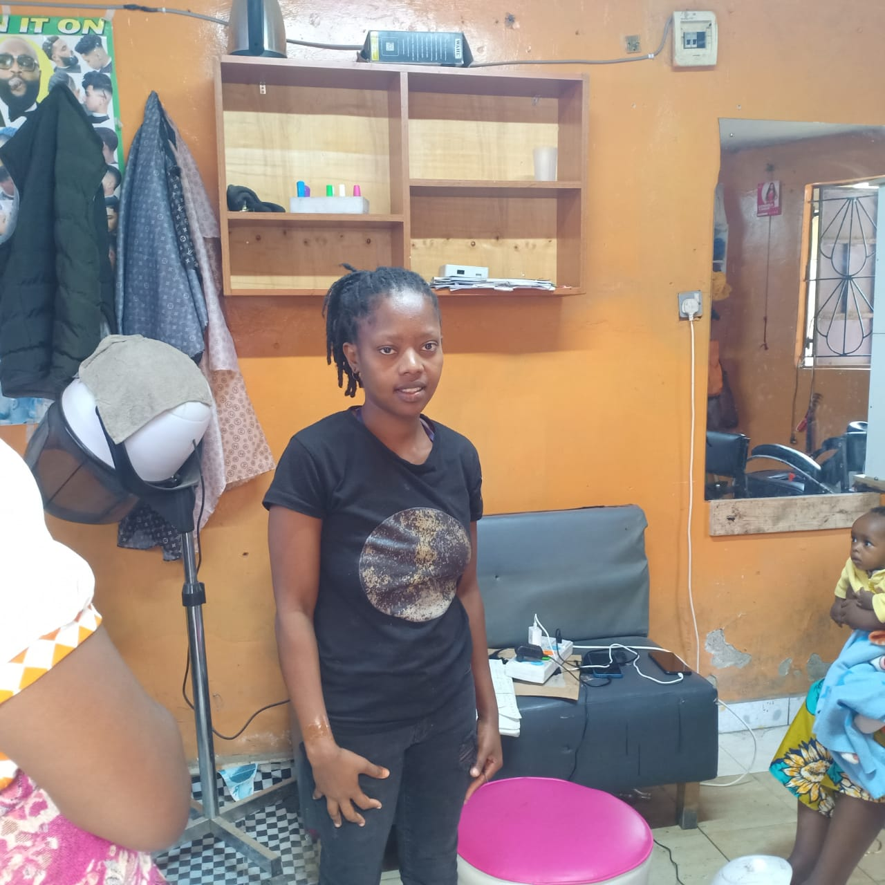
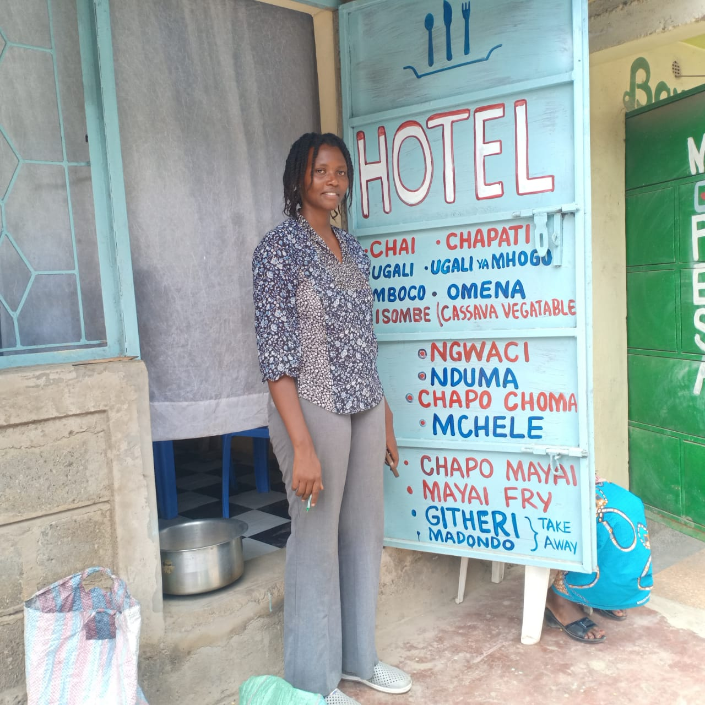

Real Change.
Real Numbers.
Every skill we teach ripples outward — into families, businesses and entire communities.
10,000+
THE NUMBER TELL A STORY OF REAL CHANGE
We have trained over ten thousand individuals in practical skills that matter. Over a thousand of our graduates now run their own businesses. Youth unemployment in our community has declined as people find work and purpose.
10,000+
Lives have been impacted through our program.
4500
Individuals have gone through technical skills training
1500
Students have participated in entrepreneurship training
1500
Students have gone through mentorship programs
2000
Graduates have gotten job linkages and internships
1000+
A thousand of our graduates now run their own businesses. Youth unemployment in our community has declined as people find work and purpose.
VOICES FROM
THE COMMUNITY
Real stories from the people we serve. These videos capture the lived experiences of our beneficiaries — in their own words.
Empowering Dreams, Changing Lives
Meet Dinah Simiyu, 34, a single mother of two. After completing our Women Empowerment program in soap making, she took a $150 loan from her savings group to start her business. Today, Dinah is able to provide for her family and create a brighter future.
From Dependency to Independence
Emmy, 35, transformed her life through our Baking & Pastries training. With $340 support and essential equipment, she launched her cake business and now earns $11 daily, building a future of independence and hope.
STORIES OF
OUR IMPACT
Every number in our reports is a person. These are some of their stories.

The business plan training helped me see my farming idea as something real, not just a dream.
Brian Mutua
Brian spent four years as a boda boda rider before enrolling in our entrepreneurship track. Combining logistics knowledge with newly acquired financial management skills, he launched a vegetable aggregation venture linking small-scale farmers to urban markets.

I left Congo with nothing but my children and my will to survive. Kenya gave me safety. This programme gave me a future.
Joyese Esperance
Joyese arrived in Kenya as a refugee with two young children and no income. She joined our catering programme and built a steady customer base cooking for her community and a local church fellowship every Sunday — turning a survival skill into a sustainable livelihood.

At 47 most people told me I was too old to start over. The training showed me I was not starting over — I was starting right.
Esther Muthoni
Esther had been collecting and selling plastic bottles to a middleman for years, never knowing their real value. The bookkeeping and marketing training changed that entirely — she now sells directly to recyclers and earns three times what she made before.

I always loved doing hair and makeup for my friends for free. Now I get paid to do what I love every single day.
Peru Nduta
Peru came from a family that could not afford to keep her in college. She enrolled in our beauty and cosmetology programme, mastering hair care, skincare, and nail art. Her practicals caught the attention of a trainer who referred her to a mid-range beauty parlour in Thika town. She was hired before she even graduated. She is now a senior stylist, handles a full client book independently, and is saving toward her own salon.

People always said my food was too good to be eaten at home. I finally believed them.
Alice Wanjiru
Alice was a gifted home cook who had never thought of her skill as a business. The catering programme gave her the professional foundation she needed — food safety, portion costing, menu planning, and kitchen management. She started by supplying packed lunches to a nearby office block, reinvested every shilling, and within two years opened Nduta's Place, a small hotel in Nakuru serving breakfast and lunch to workers and travellers. She now employs three full-time staff and has a loyal daily clientele.